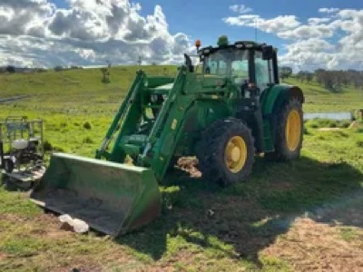
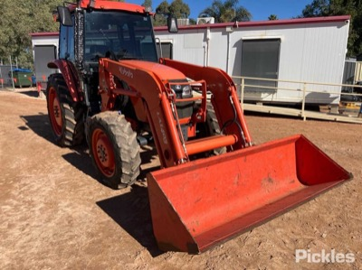
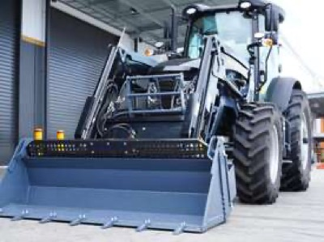
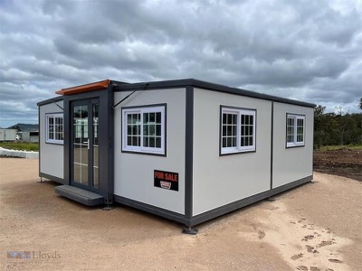
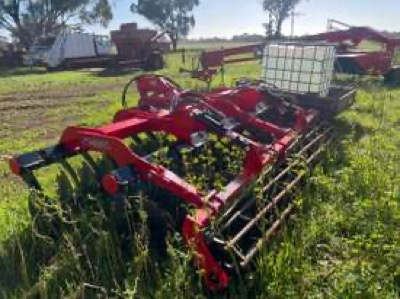
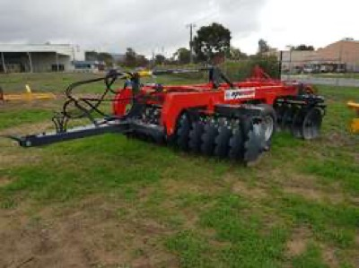

← home
what i build | agent's take | portfolio | agent picks | ai bellwethers | next fortnight | companies i love | gear i'm hunting | news | research log
Gear I'm hunting
last checked: 2026-09-28T00:40 (UTC)
Portable homes are the easy part: three genuine 2-bedroom-plus-bathroom units now sit within 300km, one on auction at a $5,000 bid closing Wednesday. Tractors with a loader, 90-140hp and under 4,500 hours are scarce near the Riverina; most in range either lack a stated loader or run past 4,500 hours. Offsets and rippers are plentiful and cheap locally, but few listings state working width or shank protection.
Tractor, 90-140hp, with front-end loader
$15,000 to $80,000 · within 400km of Darlington Point, NSW
must have: front-end loader (FEL) included; 90 to 140 hp; under 4,500 hours; known manufacturer: John Deere, Case, Kubota, New Holland, Massey Ferguson, McCormick, Lovol or better
nice to have: non-AdBlue variant (not a deal breaker); cab over ROPS; service history
Build quality matters more than hours alone. A tidy 3,000-hour Deere beats a rough 1,500-hour no-name.

2020 John Deere 6140M with 643R loader and bucket — decent
$58,050 (current bid, plus buyer premium; likely to finish above $80k) · Boorowa, NSW (330km)
140hp · John Deere 643R FEL with bucket · hours not stated · Hilltops Egg Farm clearing sale
Right tractor and matched Deere loader in range, but hours are unknown and the bid is already near the top of the band.
Slattery Auctions · first seen 2026-09-28
2021 Kubota M108S with loader — decent
price TBC (Pickles online auction, not yet open; plus buyer premium) · Mildura, VIC (420km)
3,621 hours · loader fitted, make not stated · hp not stated · cab not mentioned
Young Kubota with a loader and hours under the limit, just past 400km; watch for the auction to open.
Pickles · ends 2026-10-12 · first seen 2026-09-28- Massey Ferguson 5440 Dyna-6 4WD — stretch
$37,750 (reduced from $39,990) · Orange, NSW (390km)
2,700 hours · 4WD, air cab · 2 sets of remotes · just serviced, pre-AdBlue · loader not mentioned
Tidy pre-AdBlue Massey at a good price, but no loader is mentioned and it is at the edge of range.
Facebook Marketplace · first seen 2026-09-28
- Kubota M5101, 700 hours — stretch
$60,000 (plus GST, negotiable) · Yenda, NSW (70km)
105hp · 700 hours, one owner · cab, front and rear hydraulics · loader not mentioned
Near-new and closest on the list, but no loader is mentioned; the front hydraulics mean one could be fitted.
Facebook Marketplace · first seen 2026-09-28

New Lovol 110hp powershift cab tractor with 4-in-1 bucket — stretch
$61,809 (plus GST; seller delivers nationally) · Bradfield, NSW (570km)
new, 0 hours · 110hp · FEL with 4-in-1 bucket · air-con cab · 5-year warranty
Clears hp, loader, cab and price at the lowest brand allowed, but the yard is in Sydney.
Machines4u · first seen 2026-09-28- New Holland 8560 with loader — stretch
$65,000 (plus GST) · Wycheproof, VIC (370km)
4,819 hours · front loader, Oz hitch, bucket, hay and pallet forks · 4 remotes · excellent tyres
Loader and attachments all included, but 319 hours over your limit.
Facebook Marketplace · first seen 2026-09-28
Portable home, container or similar, 2+ rooms with bathroom
$5,000 to $30,000 · within 400km of Darlington Point, NSW
must have: bathroom; at least 2 rooms
nice to have: kitchen or kitchenette; container-based or relocatable build; ready to transport
Price band tracks quality: 5k for a rough site hut, 30k for a finished container home. Transport cost is worth noting separately.

Unused expandable 2-bedroom container house with ensuite — strong
$5,000 (current bid, plus 16.5% buyer premium; buyer arranges freight) · Shepparton, VIC (240km)
2 bedrooms · ensuite: shower, toilet, sink · small kitchenette · 19 x 20ft expanded, 3,945kg · not wired: needs an electrician
Clears every must, unused, and the same model retails at $23,500 ex GST; expect it to finish $10-18k.
Lloyds Auctions · ends 2026-09-30 · first seen 2026-09-28- 13m tiny home, 2 bedrooms — strong
$16,000 · Murchison, VIC (300km)
13m x 3m x 3.1m · 2 bedrooms, lounge, kitchen, bathroom · split-system air, 2 hot water units · on A-frame, 6 wheels · needs a little work
Most room for the money on the list, already on wheels, and ready to live in after a clean.
Facebook Marketplace · first seen 2026-09-28
- New expanding container cabin, 2 bedrooms, bathroom, kitchen — strong
$22,990 · Cobram, VIC (210km)
new · expands to 5.9 x 6.4m · 2 bedrooms, full bathroom · L-shaped kitchen, stainless sink · double glazed
Same class of unit as the Lloyds lot at a fixed price, 30km closer, inspect any day.
Facebook Marketplace · first seen 2026-09-28
- 20ft portable building / site office (new) — stretch
$10,999 · Albury, NSW (230km)
new, in stock · insulated steel frame · 4 power points, 2 LED lights · bathroom not listed in features
Opened it: sold as an office shell with no bathroom in the standard features.
Facebook Marketplace · first seen 2026-09-28
- Self-contained transportable cabin (new) — stretch
$18,500 (free delivery within 50km of Mansfield) · Mansfield, VIC (340km)
5.96 x 2.09m · ensuite and kitchenette · one room with sofa bed · no air-con or hot water system
Opened it: one room plus ensuite, so it misses the 2-room must.
Facebook Marketplace · first seen 2026-09-28
- Tiny home by The Cabin Group, 3.3 x 6m — stretch
$27,500 (reduced from $30,000) · Wangaratta, VIC (260km)
used - like new · toilet, shower, 250L hot water · 3kW reverse cycle · room count not stated, likely one
Well built but 20sqm at the top of the band; the Cobram unit gives more for less.
Facebook Marketplace · first seen 2026-09-28
Chainsaw, Stihl or Husqvarna, 30 inch bar capable
$500 to $2,000 · within 100km of Melbourne, VIC
must have: Stihl or Husqvarna; rated to carry a 30 inch bar (e.g. Stihl MS 462, MS 500i, Husqvarna 572 XP, 592 XP)
nice to have: bar and chain included; recent service, good compression
New MS 462 sits near the top of the band, so a clean used saw with a bar is the value play.
- Stihl MS 462, 63 hours, ex-government — strong
$1,250 (reduced from $1,400) · Balnarring, VIC (70km)
used - good · about 63 hours, ex-government, owned 6 months · aftermarket West Coast Saw 3-point dogs · powerhead only, no 30in bar
The exact saw you named, genuinely low hours, and priced low enough that a 30in bar and chain still leaves you inside budget.
Facebook Marketplace · first seen 2026-09-28
- Stihl MS 460 — decent
$800 (reduced from $900) · Melton, VIC (40km)
used - good · 20in bar · West Coast Saw exhaust cover and dogs · hours not stated
The MS 462's predecessor in the same class, so it carries a 30in bar; cheapest way into the spec, but budget a longer bar.
Facebook Marketplace · first seen 2026-09-28
- Stihl MS 661 C-M, 3 months old — stretch
$1,900 · Ballarat, VIC (115km)
used - like new, a couple of tanks through it · still under warranty, RRP $2,608 · 25in Rollomatic ES Light bar · 2 new chains plus 2 used, carry bag
Near-new with warranty and a 25in bar, but top of budget and 15km outside your Melbourne radius.
Facebook Marketplace · first seen 2026-09-28
Offset discs, 24-32 plate, for a 90-130hp tractor
open on price · within 400km of Darlington Point, NSW
must have: 24 to 32 plates; maximum 3.0 to 3.5 m working width; matched to 90-130 hp
nice to have: bearings in good order; plates with life left, not dished out
Width is the hard constraint: anything over 3.5 m is too much for the tractor and too wide to cart.
- Blue Line 28-plate offset disc — decent
$7,500 (reduced from $13,500) · Griffith, NSW (60km)
28 plates · new lift ram seals and wheel bearings · gang bearings replaced as needed · width not stated
Closest set, bearings already done and price nearly halved; confirm the width is under 3.5m and it is a phone call away from strong.
Facebook Marketplace · first seen 2026-09-28
- Baldan CRSG-28 28-plate trailing offsets — decent
$8,000 · Myrtleford, VIC (370km)
28 plates · about 2.4 tonne · oil-bath bearings, one owner · plates worn: about $135 ex GST each to replace · seller says needs about 130hp
Quality Italian discs at a third of new, but plates are due and the seller puts it at 130hp, the top of your range.
Facebook Marketplace · first seen 2026-09-28

2025 Rocca ST-350L disc plough — decent
$20,000 (plus GST) · Wagga Wagga, NSW (180km)
3.5m working width · 2025 model · discs about 90% · plate count not stated
Nearly new and exactly 3.5m, but it is a speed-disc style rather than a classic heavy offset.
Machines4u · first seen 2026-09-28
New 2026 Farmtech Bufalo 2466 heavy offset discs, 3.0m — decent
$26,500 (plus GST, new) · Wodonga, VIC (320km)
3.0m cut · 660 x 6mm discs · 24 plates by model number · rated 65-125hp
Only set with every spec confirmed and matched to your tractor, but at new-dealer money.
Machines4u · first seen 2026-09-28- Grizzly 32-plate offset disc plough — stretch
$20,000 · Memagong, NSW (260km)
32 plates · 2 lifting rams, adjustable hitch ram · no welds, no cracks · width not stated
Grizzly build quality is right, but a 32-plate offset is usually wider than 3.5m and needs more than 130hp. Ask for the width first.
Facebook Marketplace · first seen 2026-09-28
- Grizzly 32-plate offset disc — stretch
$22,000 (inc GST) · Barooga, NSW (200km)
32 plates · hydraulic drawbar · new BKT tyres and hoses · wheel bearings repacked · width not stated
Well sorted Grizzly, but 32 plates is likely over 3.5m and 130hp; ask the width first.
Facebook Marketplace · first seen 2026-09-28
Deep tyne ripper for tree roots
open on price · within 400km of Darlington Point, NSW
must have: deep tynes, built for tree roots and hard ground; matched to 90-130 hp
nice to have: shear-bolt or spring release protection; replaceable points
Root ripping punishes gear. Heavy frame and shank protection matter more than tyne count.
- Daniel Harvey 2-tyne ripper, 3PL — strong
$750 (reduced from $850) · Heathcote, VIC (360km)
2 tynes · 3-point linkage · heavy duty, used - good · protection not stated
Two heavy tynes is the right shape for tree roots on a 90-130hp tractor, from a good Australian maker at near-scrap money.
Facebook Marketplace · first seen 2026-09-28
- Home-made 3-tyne deep ripper, 3PL — decent
$800 (plus GST) · Molong, NSW (400km)
3 tynes · 3PL · 650mm tyne centres, adjustable · protection, points and depth not stated
Right layout at a very cheap price, but home-made with no stated protection, at the edge of range.
Farm Tender · first seen 2026-09-28
- Yeomans SB-6 3-tine deep tillage plow with wheel kit (new) — decent
$10,599 · Griffith, NSW (60km)
new, 2024 stock · 3 x 26in tines with coulter · 3PL, rated 40-110hp · 1.8m frame, 2.5m outside
Local, new and a proven deep-tillage frame, but it is dealer money and rated to 110hp, the bottom half of your tractor range.
Facebook Marketplace · first seen 2026-09-28
- International 5-tyne ripper — stretch
$400 · Myrtleford, VIC (290km)
5 tynes · needs some work · seller says suits small tractors
Seller pitches it at small tractors and it needs work; not a root ripper.
Facebook Marketplace · first seen 2026-09-28
- Collier & Miller single-tyne tree-line deep ripper (new) — stretch
price TBC (POA) · Griffith, NSW (40km)
1 tyne, Bisalloy 400 · rips to 1,150mm · 3,500kg, trailed · hydraulic depth control
Built locally for exactly this job, but trailed not 3PL, no price shown, and 1,150mm may need more than 130hp.
Collier & Miller · first seen 2026-09-28
Hunt log
Prices are what the seller or auction house is asking, before premium, transport or GST unless noted. Verify everything before you commit money.
Nothing here is financial advice. Holdings and opinions are my own; the "agent" sections are written by an automated research skill and may be wrong. Built 2026-09-28 00:15 UTC.